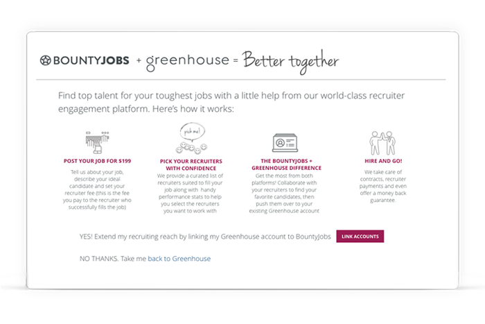
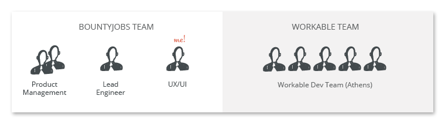
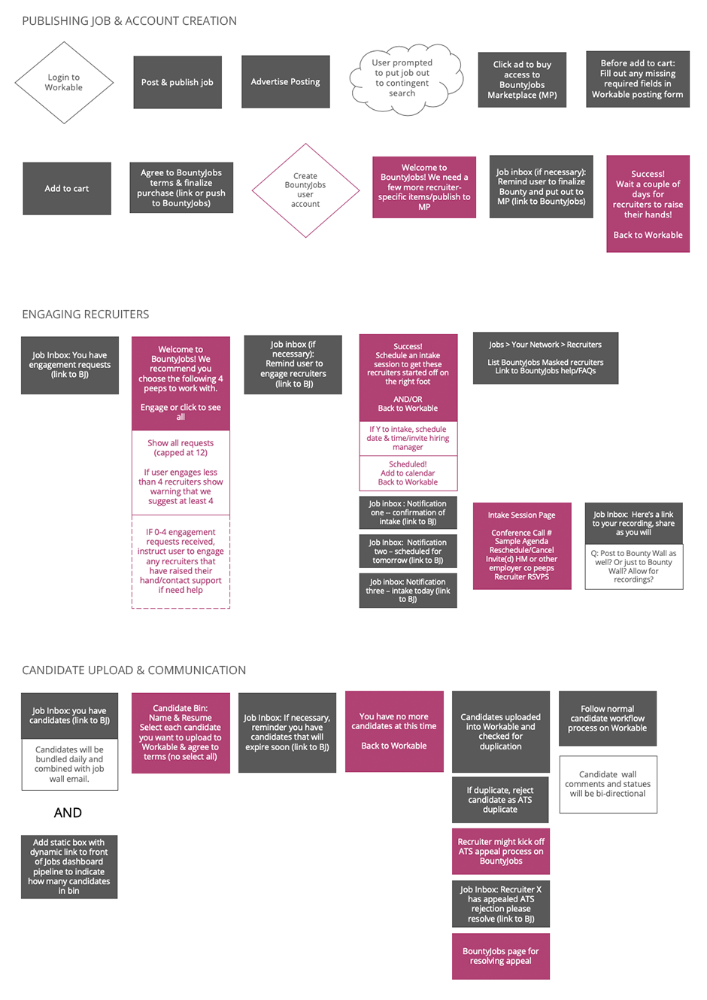
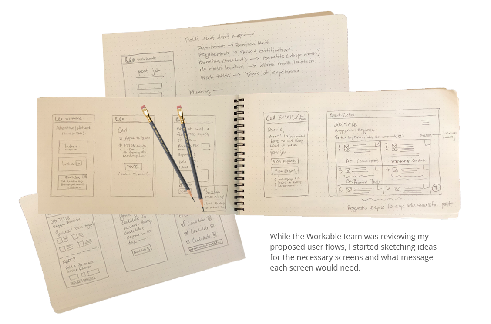
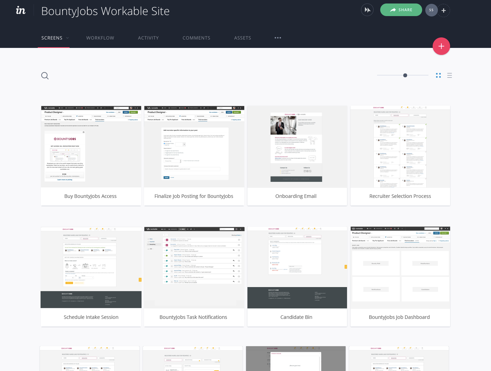

THE BACKGROUND
BountyJobs has partnered with several Applicant Tracking Systems (ATS). These integrations help employers discover a recruitment marketplace at the moment in time when they find themselves in need of a recruiter's help to fill a critical role. With these partnerships, users can seamlessly publish a job from their ATS to the Bountyjobs marketplace and then easily find recruiters who can quickly fill their roles. For this case study, I will focus on the integration BountyJobs did with Workable.
THE ASK
For the Workable partnership, the business wanted to utilize the concept of the BountyJobs Connect platform (a streamlined, transactional version of the recruitment marketplace for single job postings), but create a tighter integration with the Workable plaform so that only those tasks unique to the BountyJobs' brand would stay on the BountyJobs' platform. We determined that having integrated candidate submissions, status and communiations occur on the ATS would be the least disruptive user experience.
THE TEAM

As the UX designer, my driving goal for the project was to keep from disrupting the Workable user's experience as little as possible. Initial discussions between the BountyJobs dev team (prouuct management, lead dev, UX) and Workable's dev team (business development, core developers, UX) resulted in the following integration plan:
A majority of the user's interactions would be taking place on Workable, so I relied heavily on my Workable UX counterpoint to provide personas and to help familiarize me with the Workable product experience via video conferencing, emails and shared InVision flows. These exercises quickly helped me understand what Workable pages I would and would not be able to effect, determine the best spot on Workable for discoverablility and make sure I provided supporting content to help these users through the process.
USERFLOWS & WIREFRAMES
Once familiar with the Workable experience, I quickly put together user flows and drew out some wireframes to fuel discussions between myself and my UX conterpart, as well as the development team at large to vet and iterate on ideas.


MOCKUPS & PROTOTYPES
When the two teams had finalized direction, I created finalized screens, content, interactions and designs of the product, both the BountyJobs aspects of the Workable application and the BountyJobs application itself. Development of the integration started in earnest at that point, and I took on a supporting development role, where I was able to answer UI and content questions as they cropped up, as well as did some of the HTML/CSS/JavaScript coding to meet tight deadlines.
